Your browser doesn't support the features required by impress.js, so you are presented with a simplified version of this presentation.
For the best experience please use the latest Chrome, Safari or Firefox browser.
Perl入学式 #1
VMware Playerの導入
VMware
- 各ハードウェアで動作するOS上に仮想マシンを作成, 実行するソフトウェアです.
- x86プロセッサをエミュレートするので, このアーキテクチャに対応するOSなら, どんなOSでも動かすことができます.
VMware Player
- 今回は, Windows/Linux環境で無料で利用可能な "VMware Player 5.0.2"を導入します.
- https://my.vmware.com/web/vmware/downloads
- こちらのページからダウンロードできます(
VMware Playerを選択し, VMware Player for Windows 32-bit and 64-bitをダウンロードして下さい.)
その1
- ダウンロードしたexeファイルをダブルクリックします.
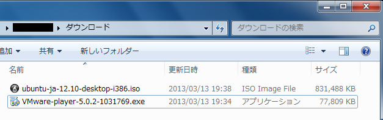
その3
- "変更(C) ..."で, VMwareのインストール先を変更できます.
- 問題なければ, "次へ(N) >"をクリックします.
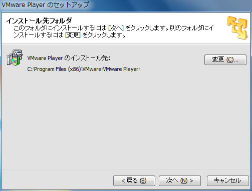
その4
- VMwareの起動時に最新版の存在を確認しない場合, チェックボックスを外します.
- 問題なければ, "次へ(N) >"をクリックします.

その5
- 問題なければ, "次へ(N) >"をクリックします.
- チェックボックスは外しても構いません.

その6
- 初期状態では, VMwareのショートカットがデスクトップとスタートメニューのプログラムフォルダに生成されます.
- 問題なければ, "次へ(N) >"をクリックします.

その7
- "続行(C)"をクリックします.
- VMwareのインストールが開始します.

その8
- インストールが終わるまで, しばらく待ちます.
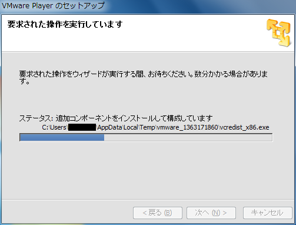
その9
- "完了 (F)"をクリックします.

その10
- ｢その6｣でデスクトップにショートカットを生成する設定にした場合, デスクトップに次のようなアイコンが生成されているはずです.

- VMwareのインストールはこれで完了です.
Ubuntuの導入
Ubuntu
- Ubuntuは, 無料で提供されているLinux系のOSです.
- 今回は, VMwareで用意した仮想マシンにUbuntuを導入します.
- Ubuntuのバージョンは最新の12.10にします.
- http://www.ubuntulinux.jp/download/ja-remix
確認
- 'ubuntu-ja-12.10-desktop-i386.iso'がダウンロードできているか確認します.
仮想マシンの作成 その1
- まず, VMwareで仮想マシンを作成します.
- 先ほどインストールしたVMwareを起動します.
仮想マシンの作成 その2
- このようなウインドウが表示した場合, 使用許諾契約書を確認した上で, "使用許諾契約の条項に同意します (A)"を選択した上で"OK"をクリックします.

仮想マシンの作成 その3
- このようなウインドウが表示した場合, "後で通知する (R)"をクリックします.
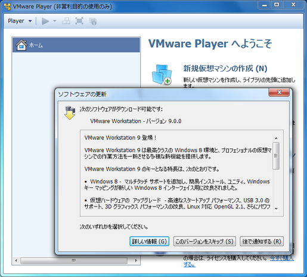
仮想マシンの作成 その4
- 画面右側メニューの"新規仮想マシンの作成 (N)"をクリックします.
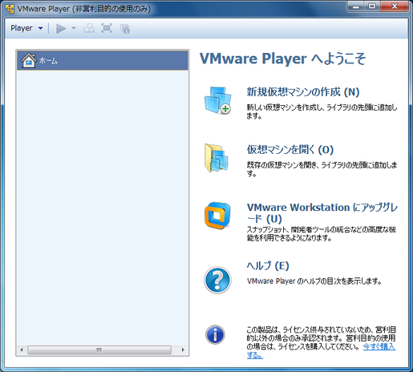
仮想マシンの作成 その5
- "後でOSをインストール (S)"を選択し, "次へ(N) >"をクリックします.
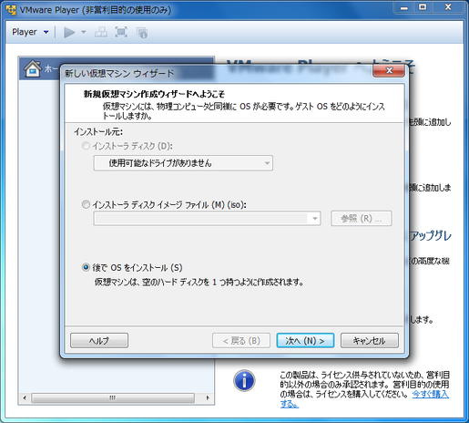
仮想マシンの作成 その6
- ゲストOSを"Linux", バージョンを"Ubuntu"にして, "次へ(N) >"をクリックします.

仮想マシンの作成 その7
- 仮想マシンの名前と場所を設定します.
- 問題なければ, "次へ(N) >"をクリックします.

仮想マシンの作成 その8
- 仮想マシンのディスク容量を設定します.
- 問題なければ, "次へ(N) >"をクリックします.
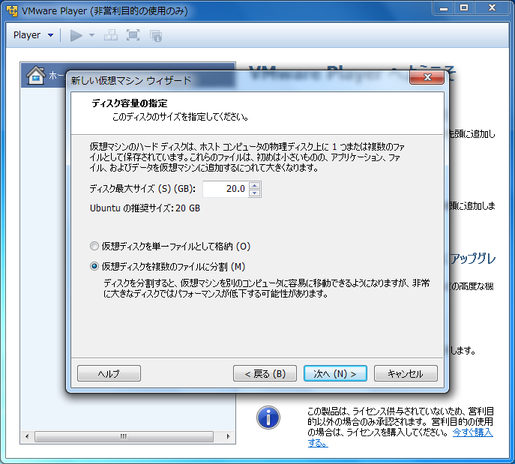
仮想マシンの作成 その9
- "ハードウェアをカスタマイズ(C) ..."をクリックします.
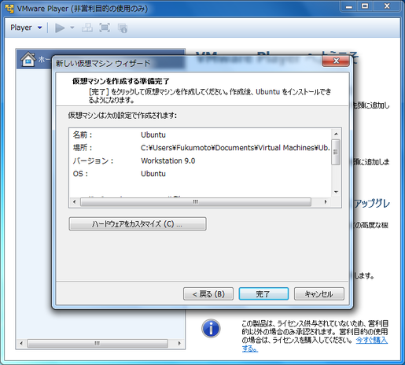
仮想マシンの作成 その10
- 左側の"ディスプレイ"を選択し, 右側の"3Dグラフィックスのアクセラレーション(3)"のチェックを外し, "閉じる"をクリックします.

仮想マシンの作成 その12
- 左側"ホーム"の下に"Ubuntu"ができていれば, 仮想マシンの生成は完了です.
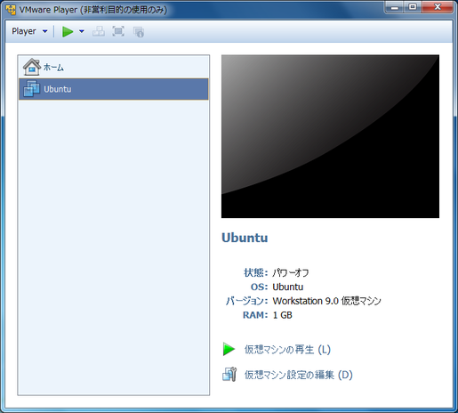
Ubuntuの導入
Ubuntuの導入 その1
- 用意した仮想マシンにUbuntuをインストールします.
- "Ubuntu"を選択し, "仮想マシンの再生(L)"をクリックします.
Ubuntuの導入 その2
- 次のようなウインドウが表示した場合, "ダウンロードしてインストール(D)"をクリックします.
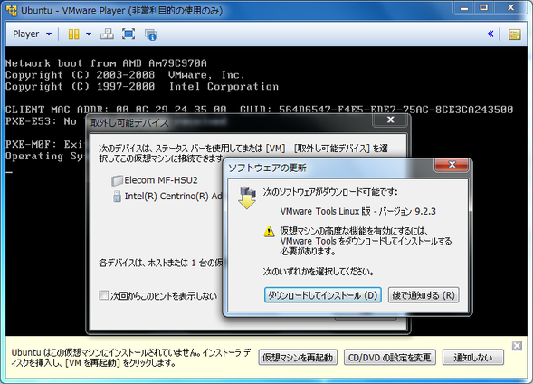
Ubuntuの導入 その3
- 下側の"CD/DVDの設定を変更"をクリックします.
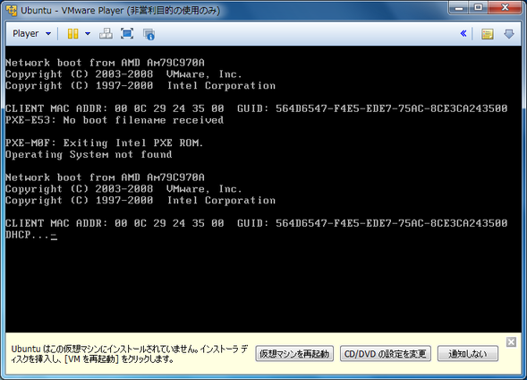
Ubuntuの導入 その4
- "ISOイメージファイルを使用する(M)"をチェックし, "参照(B) ..."をクリックします.
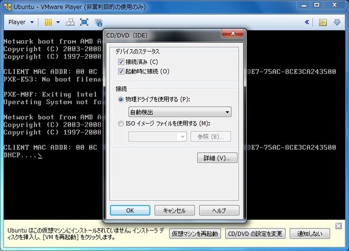
Ubuntuの導入 その5
- ダウンロードした, UbuntuのISOファイルを選択し, "開く(O)"をクリックします.

Ubuntuの導入 その6
- "OK"をクリックします.

Ubuntuの導入 その7
- 下側の"仮想マシンを再起動"をクリックします.

Ubuntuの導入 その9
- "Ubuntuをインストール"をクリックします.
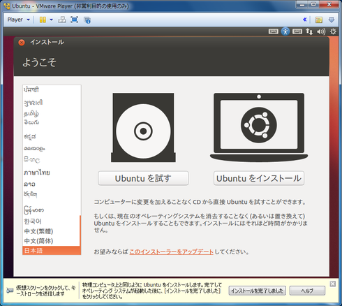
Ubuntuの導入 その10
- "続ける"をクリックします.

Ubuntuの導入 その11
- "ディスクを削除してUbuntuをインストール"をチェックした状態で"続ける"をクリックします.
- ここでの"ディスク"は仮想マシンのディスクです.
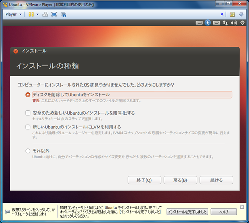
Ubuntuの導入 その12
- ディスクの削除が行われ, 終了し次第Ubuntuのインストールが始まります.

Ubuntuの導入 その14
- キーボードレイアウトを設定します.
- 問題なければ, "続ける"をクリックします.
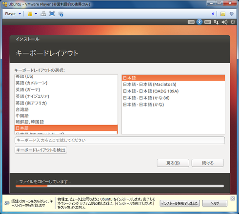
Ubuntuの導入 その15
- ユーザ名とPCの名前, パスワードを設定します.
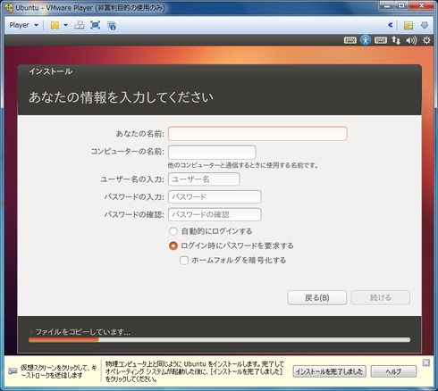
Ubuntuの導入 その16
- 設定に問題なければ, "続ける"をクリックします.

Ubuntuの導入 その19
- 再起動をすると, ログイン画面が表示されます.
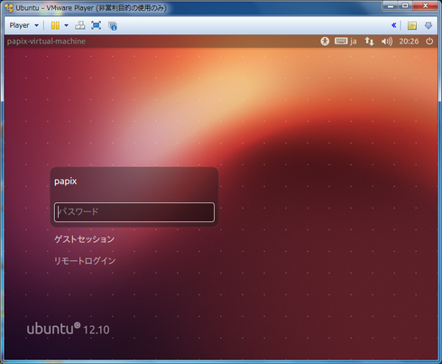
Ubuntuの導入 その20
- パスワードを入力し, パスワード入力欄右側の">"をクリックします.

Ubuntuの導入 その21
- 問題なくログインできれば, Ubuntuのインストールは完了です.

CUI
- Ubuntuも, Windowsと同じくGUIで操作可能です.
- ですが, プログラミングをする上でCUIは避けられません.
- CUI ... Character User Interface
- 文字によって操作を行うインターフェイスのこと.
- Windowsならコマンドプロンプトに該当.
CUI
- 基本的なCUIの操作を, 実際に操作しながら体験してみましょう.
- Ubuntuで利用可能なコマンドを紹介します.
- 一部コマンドはMacのターミナルでは使えませんのでご了承下さい.
Shell
- シェルはOSの機能の一部で, プログラムの起動や制御をCUIで行うプログラムです.
- Ubuntuでは'bash'と呼ばれるシェルが使われています.
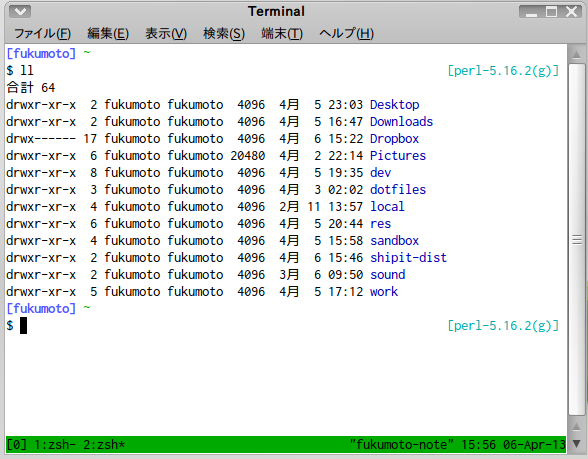
コマンド集(ls)
$ ls
デスクトップ ダウンロード (以下略)
lsは, 現在居るディレクトリにあるファイルを全て表示します.
コマンド集(pwd)
$ pwd
/home/username
コマンド集(mkdir)
$ mkdir sample
sample デスクトップ ダウンロード (以下略)
mkdir DIRECTORYは, DIRECTORYというディレクトリを作ります.
コマンド集(cd)
$ cd sample
$ pwd
/home/username/sample
$ cd ..
$ pwd
/home/username
cd DIRECTORYは, DIRECTORYに移動します.
コマンド集(rm)
$ touch sample1 sample2
$ ls
sample1 sample2
$ rm sample1
$ ls
sample2
rm [OPTION] FILEは, FILEを削除します.
target fileは半角スペースで区切ることで複数個指定することができます.
- ディレクトリを削除するときは,
[OPTION]として-rを指定し, rm -r FILEで削除しなければなりません.
コマンド集(cp)
$ ls
sample2
$ cp sample2 sample1
$ ls
sample1 sample2
cp [OPTION] SOURCE DESTは, SOURCEをDESTにコピーします.- ディレクトリをコピーするときは,
[OPTION]として-rを指定し, cp -r SOURCE DESTでコピーしなければなりません.
コマンド集(mv)
$ ls
sample1 sample2
$ mv sample1 sample_text
$ ls
sample_text sample2
mv [OPTION] SOURCE DESTで, SOURCEをDESTに移動します.
- ファイルやディレクトリの名前を変更する為にも使えます.
コマンド集(gedit)
$ ls
sample_text
$ gedit sample_text &
- geditというエディタを開始します.
gedit FILE &で, geditでFILEを開くことができます.- Macにはgeditが搭載されていないので, 使えません.
コマンド集(nautilus)
$ nautilus .
nautilus DIRECTORYで, DIRECTORYをnautilusというファイルマネージャで開きます.- 現在のディレクトリは
.です.
- Macにはnautilusが搭載されていないので, 使えません.
練習問題
- ホームディレクトリに
perl-entranceというディレクトリを作ろう.
- 作った
perl-entranceディレクトリに移動しよう.
geditでテキストを開き, 自己紹介を書いて, profile.txtという名前で保存しよう.profile.txtをprofile2.txtという名前でコピーしよう.- コピーした
profile2.txtを削除しよう.